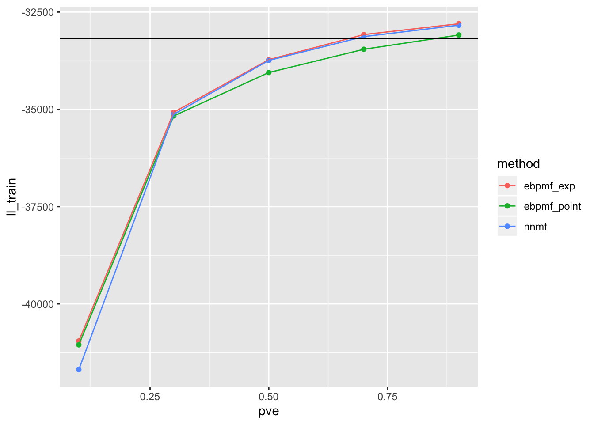

Last updated: 2019-10-13
Checks: 7 0
Knit directory: ebpmf_demo/
This reproducible R Markdown analysis was created with workflowr (version 1.4.0). The Checks tab describes the reproducibility checks that were applied when the results were created. The Past versions tab lists the development history.
Great! Since the R Markdown file has been committed to the Git repository, you know the exact version of the code that produced these results.
Great job! The global environment was empty. Objects defined in the global environment can affect the analysis in your R Markdown file in unknown ways. For reproduciblity it’s best to always run the code in an empty environment.
The command set.seed(20190923) was run prior to running the code in the R Markdown file. Setting a seed ensures that any results that rely on randomness, e.g. subsampling or permutations, are reproducible.
Great job! Recording the operating system, R version, and package versions is critical for reproducibility.
Nice! There were no cached chunks for this analysis, so you can be confident that you successfully produced the results during this run.
Great job! Using relative paths to the files within your workflowr project makes it easier to run your code on other machines.
Great! You are using Git for version control. Tracking code development and connecting the code version to the results is critical for reproducibility. The version displayed above was the version of the Git repository at the time these results were generated.
Note that you need to be careful to ensure that all relevant files for the analysis have been committed to Git prior to generating the results (you can use wflow_publish or wflow_git_commit). workflowr only checks the R Markdown file, but you know if there are other scripts or data files that it depends on. Below is the status of the Git repository when the results were generated:
Ignored files:
Ignored: .Rhistory
Ignored: .Rproj.user/
Untracked files:
Untracked: analysis/.ipynb_checkpoints/
Untracked: analysis/ebpmf_demo.Rmd
Untracked: analysis/ebpmf_rank1_demo2.Rmd
Untracked: analysis/softmax_experiments.ipynb
Untracked: data/trash/
Untracked: docs/figure/Experiment_ebpmf_rankk.Rmd/
Untracked: docs/figure/test.Rmd/
Unstaged changes:
Modified: analysis/ebpmf_rank1_demo.Rmd
Modified: analysis/ebpmf_rankk_demo.Rmd
Modified: analysis/softmax_experiments.Rmd
Note that any generated files, e.g. HTML, png, CSS, etc., are not included in this status report because it is ok for generated content to have uncommitted changes.
These are the previous versions of the R Markdown and HTML files. If you’ve configured a remote Git repository (see ?wflow_git_remote), click on the hyperlinks in the table below to view them.
| File | Version | Author | Date | Message |
|---|---|---|---|---|
| Rmd | e13ea52 | zihao12 | 2019-10-13 | Compare_ebpmf_nmf.Rmd |
rm(list = ls())
library(ebpmf)
library(gtools)
library(NNLM)
library(ggplot2)Warning: package 'ggplot2' was built under R version 3.5.2In previous experiments https://zihao12.github.io/ebpmf_demo/Issue_ebpmf_issue2.html, we found ebpmf and nmf (I use Lee’s multiplicative update, so it is EM algorithm for solving the MLE) have different performance on different dataset. Here I want to simulate data from a quantifiable noise level, as described here https://www.overleaf.com/project/5bd084d90a33772e7a7f99a2 (pve.tex), and see their performance.
\[ \begin{align} & X_{ij} \sim Pois(\Lambda_{ij} U_{ij})\\ & \Lambda_{ij} = \sum_k L_{ik} F_{jk}\\ & L_{ik} \sim Gamma(a_L, b_L)\\ & F_{jk} \sim Gamma(a_F, b_F)\\ & U_{ij} \sim Gamma(1/a, 1/a)\\ \end{align} \]
Given \(a_L, a_F, b_L, b_F\), I simulate \(L, F\), and get \(\Lambda_{true} = L F^t\). \ Then for a chosen level of pve (according to the writeup), I compute the corresponding \(a\), then sample \(Y_{train}\), and \(Y_{val}\) by: firstsampling \(U_{train}, U_{val}\), then forming the mean matrix and sampling from the Poisson.\ “ll_train” is \(log p(Y_{train}|\hat{\Lambda})\); “ll_val” is \(log p(Y_{val}|\hat{\Lambda})\); “RMSE” is \(RMSE(\Lambda_{true}, \hat{\Lambda})\).
simulate_data <- function(n, p, K, params, seed = 123){
set.seed(seed)
L = matrix(rgamma(n = n*K, shape = params$al, rate = params$bl), ncol = K)
F = matrix(rgamma(n = p*K, shape = params$af, rate = params$bf), ncol = K)
Lam = L %*% t(F)
X = matrix(rpois(n*p, Lam), nrow = n)
Y = matrix(rpois(n*p, Lam), nrow = n)
pve = compute_pve(K, a = params$a, al = params$al, af = params$af,bl = params$bl, bf = params$bf)
return(list(params = params,Lam = Lam,X = X, Y = Y, pve = pve))
}
simulate_Lam <- function(n, p, K, params, seed = 123){
set.seed(seed)
L = matrix(rgamma(n = n*K, shape = params$al, rate = params$bl), ncol = K)
F = matrix(rgamma(n = p*K, shape = params$af, rate = params$bf), ncol = K)
Lam = L %*% t(F)
return(list(params = params,Lam = Lam,L = L, F = F))
}
simulate_X <- function(sim, params){
n = nrow(sim$Lam)
p = ncol(sim$Lam)
U1 = matrix(rgamma(n*p, shape = 1/params$a, rate = 1/params$a), nrow = n)
U_Lam1 = sim$Lam * U1
X = matrix(rpois(n*p, U_Lam1), nrow = n)
U2 = matrix(rgamma(n*p, shape = 1/params$a, rate = 1/params$a), nrow = n)
U_Lam2 = sim$Lam * U2
Y = matrix(rpois(n*p, U_Lam2), nrow = n) ## do we need to sample a different U?
pve = compute_pve(K, a = params$a, al = params$al, af = params$af,bl = params$bl, bf = params$bf)
return(list(params = params,Lam = sim$Lam,X = X, Y = Y, pve = pve))
}
compute_pve <- function(K, a, al, af, bl, bf){
var_lam = K * (1 + al + af) * al * af/(bl * bf)^2
var_x = (a + 1) * var_lam + a * (K * al * af / (bl * bf))^2
return(var_lam/var_x)
}
compute_rmse <- function(lam1, lam2){
return(sqrt(mean((lam1 - lam2)^2)))
}
compute_ll <- function(X, lam){
return(sum(dpois(X,lam, log = T)))
}
## Fix other params and choose "a" that can achieve the targeted pve
adjust_a_by_pve <- function(params, K, pve){
al = params$al
af = params$af
bl = params$bl
bf = params$bf
var_lam = K * (1 + al + af) * al * af/(bl * bf)^2
numer = var_lam/pve - var_lam
denom = var_lam + (K* al*af/(bl*bf))^2
params[["a"]] = numer/denom
return(params)
}n = 100
p = 200
K = 2
params = list(al = 10, bl = 10, af = 10, bf = 10, a = NA)
m = 2 ## for ebpmf_exp
maxiter = 100
pve_ = 0.1*seq(1, 10, 2)
pves = c(); methods = c(); ll_trains = c(); ll_vals = c(); RMSEs = c();
sim_ = simulate_Lam(n, p, K, params)
for(pve in pve_){
params = adjust_a_by_pve(params, K, pve)
sim = simulate_X(sim_, params)
out_ebpmf_exp = ebpmf::ebpmf_exponential_mixture(sim$X, K = K, m = m, maxiter.out = maxiter)
out_ebpmf_exp[["lam"]] = out_ebpmf_exp$qg$qls_mean %*% t(out_ebpmf_exp$qg$qfs_mean)
ll_trains = c(ll_trains, compute_ll(sim$X, out_ebpmf_exp[["lam"]]))
ll_vals = c(ll_vals, compute_ll(sim$Y,out_ebpmf_exp[["lam"]]))
RMSEs = c(RMSEs, compute_rmse(sim$Lam, out_ebpmf_exp[["lam"]]))
methods = c(methods,"ebpmf_exp")
pves = c(pves, sim$pve)
out_ebpmf_point = ebpmf::ebpmf_point_gamma(sim$X, K = K, maxiter.out = maxiter)
out_ebpmf_point[["lam"]] = out_ebpmf_point$qg$qls_mean %*% t(out_ebpmf_point$qg$qfs_mean)
ll_trains = c(ll_trains, compute_ll(sim$X, out_ebpmf_point[["lam"]]))
ll_vals = c(ll_vals, compute_ll(sim$Y,out_ebpmf_point[["lam"]]))
RMSEs = c(RMSEs, compute_rmse(sim$Lam, out_ebpmf_point[["lam"]]))
methods = c(methods,"ebpmf_point")
pves = c(pves, sim$pve)
out_nnmf = NNLM::nnmf(sim$X, k = K, max.iter = maxiter, method = "lee")
out_nnmf[["lam"]] = out_nnmf$W %*% out_nnmf$H
ll_trains = c(ll_trains, compute_ll(sim$X, out_nnmf[["lam"]]))
ll_vals = c(ll_vals, compute_ll(sim$Y,out_nnmf[["lam"]]))
RMSEs = c(RMSEs, compute_rmse(sim$Lam, out_nnmf[["lam"]]))
methods = c(methods,"nnmf")
pves = c(pves, sim$pve)
}
df = data.frame(pve = pves, method = methods, ll_train = ll_trains, ll_val = ll_vals, RMSE = RMSEs)Below are the results (the black line in the first two plots are likelihood for oracle)
ggplot(df)+
geom_point(aes(x = pve, y = ll_train, color = method))+
geom_line(aes(x = pve, y = ll_train, color = method))+
geom_abline(slope = 0, intercept = compute_ll(sim$X, sim$Lam))
ggplot(df)+
geom_point(aes(x = pve, y = ll_val, color = method))+
geom_line(aes(x = pve, y = ll_val, color = method))+
geom_abline(slope = 0, intercept = compute_ll(sim$Y, sim$Lam))ggplot(df)+
geom_point(aes(x = pve, y = RMSE, color = method)) +
geom_line(aes(x = pve, y = RMSE, color = method))
sessionInfo()R version 3.5.1 (2018-07-02)
Platform: x86_64-apple-darwin15.6.0 (64-bit)
Running under: macOS 10.14
Matrix products: default
BLAS: /Library/Frameworks/R.framework/Versions/3.5/Resources/lib/libRblas.0.dylib
LAPACK: /Library/Frameworks/R.framework/Versions/3.5/Resources/lib/libRlapack.dylib
locale:
[1] en_US.UTF-8/en_US.UTF-8/en_US.UTF-8/C/en_US.UTF-8/en_US.UTF-8
attached base packages:
[1] stats graphics grDevices utils datasets methods base
other attached packages:
[1] ggplot2_3.2.1 NNLM_0.4.2 gtools_3.8.1 ebpmf_0.1.0
loaded via a namespace (and not attached):
[1] Rcpp_1.0.2 compiler_3.5.1 pillar_1.4.2 git2r_0.25.2
[5] workflowr_1.4.0 tools_3.5.1 digest_0.6.21 evaluate_0.14
[9] tibble_2.1.3 gtable_0.3.0 pkgconfig_2.0.3 rlang_0.4.0
[13] yaml_2.2.0 xfun_0.8 withr_2.1.2 stringr_1.4.0
[17] dplyr_0.8.1 knitr_1.25 fs_1.3.1 rprojroot_1.3-2
[21] grid_3.5.1 tidyselect_0.2.5 glue_1.3.1 R6_2.4.0
[25] rmarkdown_1.13 mixsqp_0.1-121 purrr_0.3.2 magrittr_1.5
[29] whisker_0.3-2 backports_1.1.5 scales_1.0.0 htmltools_0.3.6
[33] assertthat_0.2.1 colorspace_1.4-1 labeling_0.3 stringi_1.4.3
[37] lazyeval_0.2.2 munsell_0.5.0 ebpm_0.0.0.9000 crayon_1.3.4